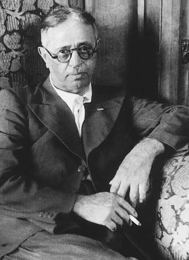
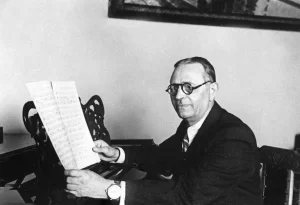

Memorial bina
4 ekspozisiya zalı, şüşəbənd və kinozal. Bəstəkarın iş otağı, royalı, şəxsi əşyaları və əlyazmaları.
Azərbaycan Respublikası Mədəniyyət Nazirliyi
18851948
Azərbaycan professional musiqisinin banisi, Şərqdə ilk operanın müəllifi. Bəstəkarın 1915–1942-ci illərdə yaşadığı və «Koroğlu» operasını yaratdığı ev.

I · Muzey haqqında
Üzeyir Hacıbəylinin ev-muzeyi 20 noyabr 1975-ci ildə Bakının Yasamal rayonunda, bəstəkarın 1915–1942-ci illərdə yaşadığı evdə təntənəli şəkildə açılmışdır. Bəstəkarın bir çox əsəri, o cümlədən Azərbaycan musiqisinin şah əsəri sayılan «Koroğlu» operası məhz bu divarlar arasında yaranmışdır.
Muzeyin yaradılmasında bəstəkarın şəxsi katibi olmuş Ramazan Xəlilovun xüsusi xidməti var — o, Üzeyir bəyin şəxsi və ev əşyalarını illər boyu qoruyub saxlamış və muzeyə təhvil vermişdir. Ekspozisiyanın tərtibatında xalq rəssamı Kazım Kazımzadə və memar Eduard Kruikin, divar mozaikası üzərində isə rəssam Rəhman Hadıyev çalışmışdır.
2005-ci ildə bəstəkarın 120 illik yubileyi ilə əlaqədar memorial bina əsaslı təmir olunmuş, 2007-ci ildə isə ona bitişik inzibati bina inşa edilmişdir.

4 ekspozisiya zalı, şüşəbənd və kinozal. Bəstəkarın iş otağı, royalı, şəxsi əşyaları və əlyazmaları.
İnzibati binada yerləşən salonda hər il tematik sərgilər təşkil olunur.
Bəstəkarın irsinə dair nəşrlər, arxiv sənədləri və muzey fondu.
Hacıbəylinin əsərlərinin tarixi səs yazıları və ifaları toplusu.
II · Həyat yolu
Hər not — bir tarix. Notlara toxunun və dinləyin.
18 sentyabr — Ağcabədidə anadan olub, uşaqlığı Şuşada keçib.
Qori müəllimlər seminariyasında təhsil alıb.
12 (25) yanvar — Şərqdə ilk operanın premyerası. Azərbaycan opera sənətinin doğum günü.
Moskvada musiqi kurslarında, sonra Sankt-Peterburq konservatoriyasında oxuyub.
Dünyaya yayılan musiqili komediya — onlarla dilə tərcümə olunub.
Bakıda indiki muzey binasında yaşamağa başlayır (1942-ci ilədək).
Azərbaycan Xalq Cümhuriyyətinin himnini bəstələyir — bu gün də müstəqil Azərbaycanın himnidir.
Bakıda Azərbaycan Türk Musiqi Məktəbini təsis edir.
İlk notlu xalq çalğı alətləri orkestrini yaradır; 1936-da Dövlət xorunu təşkil edir.
30 aprel — bu evdə yazılmış «Koroğlu» operasının premyerası. 1941-də Dövlət mükafatı.
Bəstəkarlar İttifaqının sədri seçilir (1938–1948); Lenin ordeni ilə təltif olunur.
Azərbaycan Dövlət Konservatoriyasına rəhbərlik edir.
Elmlər Akademiyasının həqiqi üzvü, İncəsənət İnstitutunun direktoru.
23 noyabr — Bakıda vəfat edib, Birinci Fəxri Xiyabanda dəfn olunub.
III · Yaradıcılıq
Füzulinin poeması əsasında. Müsəlman Şərqində ilk opera; 2008-ci ildə 100 illiyi UNESCO çərçivəsində qeyd olunub.
Muğam operasıMuğam operası
Firdovsinin «Şahnamə»si əsasında
Muğam operası
Xalq dastanı əsasında
Muğam operası
Bu evdə bəstələnmiş, Azərbaycan klassik musiqisinin zirvəsi. Premyera — 30 aprel 1937. Uvertürası dünya səhnələrində səslənir.
Bu evdə yaranıbMusiqili komediya
Musiqili komediya
Ən çox tərcümə və səhnələşdirilən Azərbaycan əsəri. 1945-ci il ekranlaşdırmasının musiqisi Dövlət mükafatına layiq görülüb.
OperettaSöz: Əhməd Cavad
Romans, söz: Nizami Gəncəvi
Romans, söz: Nizami Gəncəvi
Uvertüra; «Vətən və cəbhə» kantatası
Muğamı opera səhnəsinə gətirən, xalq musiqisini Avropa formaları ilə birləşdirərək yeni milli məktəb yaradan bəstəkar.
18 sentyabr — bəstəkarın doğum günü — Azərbaycanda Milli Musiqi Günü kimi qeyd olunur.
IV · Arxivdən
V · Xatirə
VI · Ziyarət